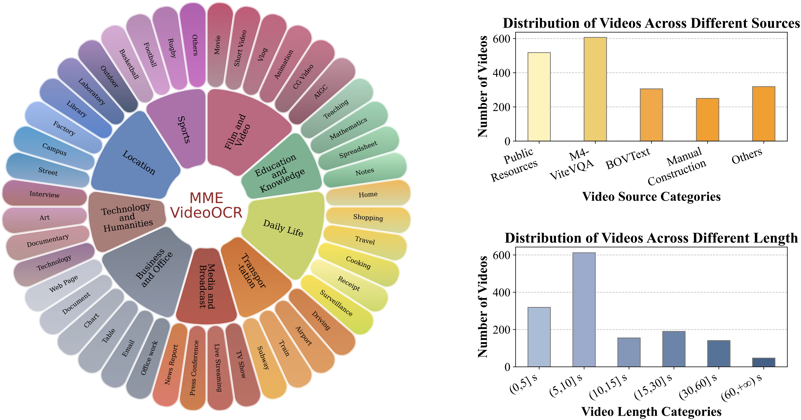
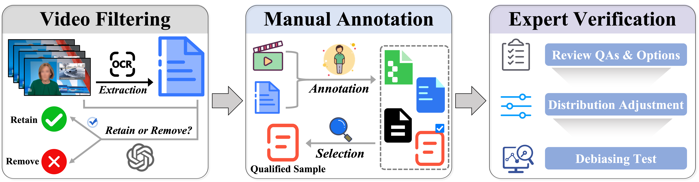
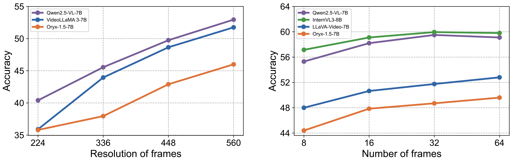
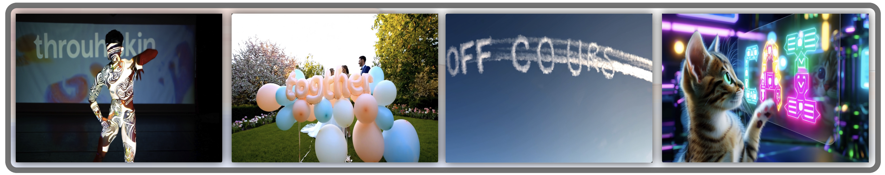

Multimodal Large Language Models (MLLMs) have achieved considerable accuracy in Optical Character Recognition (OCR) from static images. However, their efficacy in video OCR is significantly diminished due to factors such as motion blur, temporal variations, and visual effects inherent in video content. To provide clearer guidance for training practical MLLMs, we introduce the MME-VideoOCR benchmark, which encompasses a comprehensive range of video OCR application scenarios. MME-VideoOCR features 10 task categories comprising 25 individual tasks and spans 44 diverse scenarios. These tasks extend beyond text recognition to incorporate deeper comprehension and reasoning of textual content within videos. The benchmark consists of 1,464 videos with varying resolutions, aspect ratios, and durations, along with 2,000 meticulously curated, manually annotated question-answer pairs. We evaluate 18 state-of-the-art MLLMs on MME-VideoOCR, revealing that even the best-performing model (Gemini-2.5 Pro) achieves an accuracy of only 73.7%. Fine-grained analysis indicates that while existing MLLMs demonstrate strong performance on tasks where relevant texts are contained within a single or few frames, they exhibit limited capability in effectively handling tasks that demand holistic video comprehension. These limitations are especially evident in scenarios that require spatio-temporal reasoning, cross-frame information integration, or resistance to language prior bias. Our findings also highlight the importance of high-resolution visual input and sufficient temporal coverage for reliable OCR in dynamic video scenarios.
Teaser
An example in MME-VideoOCR. The task requires the MLLM to first recognize the textual information distributed across multiple video frames, and then to perform semantic understanding and reasoning over the extracted text to accurately determine the correct answer. The correct information is marked in blue, while misleading information is marked in red.
Visualization
Example videos and their annotated questions from the MME-VideoOCR benchmark, encompassing 25 tasks across 10 categories. Each task is designed to evaluate models' capabilities in various aspects such as text recognition, localization, reasoning, and comprehensive video understanding. The figure displays representative video samples and their corresponding questions.
Leaderboard
Evaluation results on MME-VideoOCR.TR denotes Text Recognition,
VTQA Visual Text QA,
TG Text Grounding,
AR Attribute Recognition,
CDT Change Detection & Tracking,
STP Special Text Parsing,
CFTU Cross-Frame Text Understanding,
TBR Text-Based Reasoning,
TBVU Text-Based Video Understanding, and
RVT Robust Video Testing.
The highest accuracy of each task is in red,
and the second highest is underlined.
Model
Size
TR
VTQA
TG
AR
CDT
STP
CFTU
TBR
TBVU
RVT
Total
Closed-source MLLMs
Gemini-1.5 Pro
-
76.7%
77.6%
61.5%
64.7%
55.0%
74.0%
31.3%
68.7%
53.5%
68.0%
64.9%
GPT-4o
-
83.3%
81.6%
60.5%
74.7%
51.5%
68.0%
30.7%
60.7%
59.0%
75.3%
66.4%
Gemini-2.5 Pro
-
83.0%
91.6%
64.5%
74.0%
70.0%
84.4%
48.7%
74.0%
56.5%
72.0%
73.7%
Small-scale MLLMs
LLaVA-OneVision
7B
42.0%
50.0%
49.0%
54.0%
41.0%
46.4%
20.0%
45.3%
52.0%
60.0%
46.0%
VideoChat-Flash
7B
36.7%
48.0%
60.0%
60.0%
49.0%
46.0%
19.3%
50.0%
54.0%
60.7%
47.8%
Slow-fast MLLM
7B
46.0%
54.8%
52.0%
60.0%
47.0%
48.0%
20.0%
43.3%
48.5%
54.0%
47.8%
VITA-1.5
7B
49.0%
58.4%
43.0%
61.3%
49.0%
53.2%
20.0%
51.3%
47.0%
58.7%
49.5%
Oryx-1.5
7B
51.7%
54.0%
50.5%
54.7%
44.5%
52.8%
23.3%
48.7%
47.0%
64.0%
49.6%
LLaVA-Video
7B
47.0%
59.2%
61.0%
68.7%
48.5%
50.0%
21.3%
47.3%
56.5%
68.7%
52.8%
VideoLLaMA 3
7B
47.3%
57.6%
68.0%
64.7%
50.0%
54.0%
21.3%
48.7%
55.0%
67.3%
53.5%
Qwen2.5-VL
7B
70.3%
70.0%
58.0%
68.7%
48.5%
66.4%
17.3%
49.3%
53.0%
71.3%
59.1%
InternVL3
8B
61.3%
72.0%
60.0%
69.3%
56.5%
62.4%
23.3%
57.3%
55.0%
71.3%
59.8%
Middle-scale MLLMs
Oryx-1.5
32B
50.3%
60.0%
63.5%
62.7%
46.0%
60.4%
21.3%
54.7%
61.0%
68.0%
55.2%
Kimi-VL
16B
54.7%
66.4%
59.0%
62.7%
48.0%
57.6%
23.3%
56.7%
57.5%
71.3%
56.2%
Qwen2.5-VL
32B
58.3%
77.2%
62.5%
68.7%
52.0%
70.4%
22.7%
68.7%
54.5%
65.3%
61.0%
InternVL3
38B
67.0%
76.8%
65.0%
76.0%
61.0%
69.6%
24.7%
76.0%
61.5%
76.7%
66.1%
Large-scale MLLMs
InternVL3
78B
70.0%
77.6%
67.5%
76.0%
65.5%
71.6%
24.7%
77.3%
57.0%
75.3%
67.2%
Qwen2.5-VL
72B
80.7%
80.0%
65.0%
74.0%
56.5%
79.6%
26.7%
74.7%
57.0%
78.7%
69.0%
Benchmark Statistics

Overview of MME-VideoOCR Statistics. The videos in MME-VideoOCR covers 9 major scenario categories comprising 44 specific scene types, offering fine-grained coverage of diverse video contexts. The benchmark features a balanced distribution of video durations and sources, with a significant portion of the videos newly collected from public resources or manually curated.
Construction Process

Overview of the MME-VideoOCR construction process. Video filtering ensures sufficient visual dynamics and meaningful textual content. Manual annotation provides high-quality QA pairs, and expert verification further enhances sample reliability and mitigates potential biases.
Analysis
Model Performance and Benchmark Discriminative Power.
We evaluate 18 state-of-the-art MLLMs, including both open-source models (7B–78B) and closed-source models such as GPT-4o and Gemini-2.5 Pro. The results highlight the strong discriminative capability of the MME-VideoOCR benchmark. The accuracy gap between the best-performing model (Gemini-2.5 Pro, 73.7%) and the lowest (LLaVA-OneVision 7B, 46.0%) underscores substantial performance variation across models. In terms of task difficulty, performance on tasks such as Cross-Frame Text Understanding and Text-Based Video Understanding remains generally low, with most models scoring below 60%, reflecting the challenges of temporal integration and semantic reasoning in video OCR.
Impact of Resolution and Frame Count.

Our experiments demonstrate that both higher input resolution and a greater number of frames significantly improve model performance on video OCR tasks. Increasing the resolution of each frame consistently enhances accuracy across all tested models. Similarly, extending the number of input frames generally benefits performance. However, models such as Qwen2.5-VL and InternVL3 show a slight performance drop when the frame count increases from 32 to 64, suggesting that excessively long contexts may hinder attention allocation and degrade performance.
Textual Information Utilization.
In tasks like Subtitle-Based Video Understanding, where relevant information is concentrated in a small number of frames, most models perform well. This indicates that current MLLMs are capable of leveraging embedded textual cues for effective semantic comprehension when the temporal scope is limited.
Limitations in Temporal Integration.
Models exhibit significant limitations in tasks that require cross-frame reasoning. Most achieve only around 20% accuracy on Cross-Frame Text Understanding, while all models fail entirely on Trajectory Recognition, with an accuracy of 0%. Additionally, the majority score below 35% on Scrambled Recognition. These results indicate a consistent weakness in integrating temporally dispersed information, as current models tend to rely on localized context rather than constructing a comprehensive temporal understanding.
Language Prior Bias.

MLLMs exhibit a strong tendency to prioritize language priors over visual fidelity. They often normalize misspelled yet visually clear text into contextually likely words, leading to systematic errors. This behavior indicates a reliance on linguistic plausibility rather than accurate visual transcription, undermining performance in OCR tasks where character-level precision is critical.
Key Takeaways for Model Optimization.
Overall, the results suggest that robust video OCR requires not only high-resolution visual input and extended temporal context, but also architectural improvements for long-range integration and a better balance between visual evidence and linguistic priors. These remain critical directions for the next generation of MLLMs.